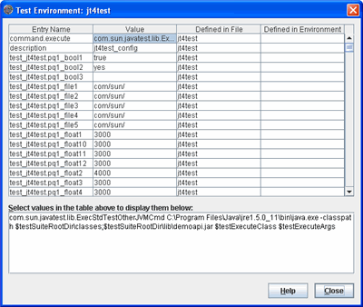

Viewing Configuration Values
The Test Environment browser displays the configuration values used to run a test suite.

To open the Test Environment browser, choose
View > Configure > Show
Test Environment
from the Test Manager menu bar.
The Test Environment browser contains a four-column table that displays information
derived from the configuration file and used in configuring the test run. Useful
features of the Test Environment browser include the following:
- Click and drag
the column headers or their separators to rearrange the order and change
the size of the columns.
- Click inside a table cell to display its contents
in the text box below the table. This
is a useful feature when the contents of a cell are too long for the
table to effectively display them.
- Click
a column header to alpha-numerically sort the contents of the table. This
is a useful feature when searching for a specific name or value in a lengthy
table.
The following table describes the contents of the Test Environment browser.
|
Name
|
Description
|
|
Entry Name
|
Identifies a name-value pair derived from the configuration file and used by
test suite specific plug-in code to execute and run tests.
|
|
Value
|
A value specified by the user in the configuration file used to configure a test run.
|
|
Defined in file
|
Identifies the source of the configuration information used to run the tests. If your test suite uses a configuration (.jti)
file to run tests, the source of the values is displayed. |
|
Defined in environment
|
When appropriate, this field displays the environment name from the configuration.
|
Copyright © 2001, 2009, Oracle and/or its affiliates. All rights reserved.